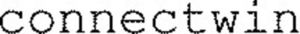

Trade Mark Journal No.2025/031 1 August 2025
WO0000001864381 (9,42)
Office of origin: France
Date of International Registration:17 March 2025
Date of designation in the UK:
17 March 2025

International priority date claimed: 18 September 2024
(France)
(5083057)
- Class 9
- Software; downloadable modeling software; augmented or virtual reality software; software for project management; computer software for automating tasks, workflows and resources and providing notifications and reports to users; software for managing and planning agendas; software for providing notifications and reports to users; computer software for use in electronic storage of data; software for sharing information to facilitate collaborative work and interactive discussions; software for electronic communications, including conversations, email and discussions; file synchronization software; database synchronization software; interfaces [for computers]; computer platforms in the form of recorded or downloadable software; collaborative software platforms [software]; downloadable computer software for use as a database application programming interface (API); interactive databases; downloadable software and software applications for modeling and simulating information and data for structure or building design, construction, operation and maintenance; downloadable software and software applications for modeling and simulation enabling information and data exchange for structure or building design, construction, operation and maintenance; downloadable software and software applications for modeling and simulating information and data for structure or building construction process management.
- Class 42
- Engineering services, environmental engineering services, engineering project study, engineering design and consulting, scientific and technological services as well as research and design services relating thereto; industrial analysis, industrial research and industrial design services; quality control and authentication services; design and development of computers and software for modeling and simulation; Software as a Service [SaaS]; Software as a Service [SaaS] services featuring construction, operation and maintenance management software, namely, task management and collaborative task management software; Platform as a Service [PaaS]; technical project studies in the field of construction and civil engineering; online provision of non-downloadable management software; Software as a service (SaaS) services featuring software for project management; design and development of data storage systems; design and development of systems for data input, extraction, processing, display and storage; Platform as a Service (PaaS) featuring software platforms for transmission of data, texts, images, audiovisual content, video content and messages, 3D content, virtual-reality content and data; maintenance of databases; hosting of databases; computer database design and development; design and development of software for importing and managing data; architectural project management; development (design), installation, maintenance, updating or rental of software; computer programming; computer system analysis; computer system design; digitization of documents; design and development of virtual reality and augmented reality software; hosting virtual reality and augmented reality content on the Internet; Software as a Service [SaaS] featuring non-downloadable modeling software; Computer Platform as a Service [PaaS] featuring computer platforms in the form of recorded or downloadable software; Software as a Service [SaaS] featuring non-downloadable software for streaming multimedia content and application service providers [ASP] featuring software for transmission of data, texts, messages, images, audiovisual and video content, 3D content, virtual-reality content and data; Software as a Service [SaaS] featuring non-downloadable software for sharing and displaying a user's position, planning activities with other users and making recommendations; temporary provision of non-downloadable software enabling users to upload, modify and share virtual-reality content, augmented-reality content, mixed-reality content, information, experiences and data.
EGIS
Representative: Madame BLACHIER Armelle NOVAGRAAF FRANCE, 2 Rue Sarah Bernhardt,, CS90017,, F-92665 ASNIERES-SUR-SEINE CEDEX, FRANCE